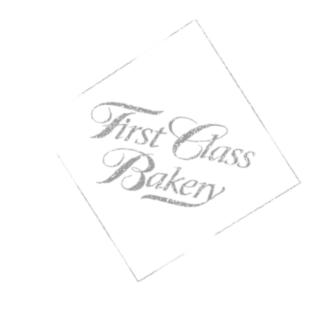

Donec ullamcorper nulla non metus auctor fringilla. Integer posuere erat a ante venenatis dapibus posuere velit aliquet. Aenean eu leo quam. Pellentesque ornare sem lacinia quam venenatis vestibulum. Curabitur blandit tempus porttitor. Donec id elit non mi porta gravida at eget metus.Donec ullamcorper nulla non metus auctor fringilla. Integer posuere erat a ante venenatis dapibus posuere velit aliquet. Aenean eu leo quam. Pellentesque ornare sem lacinia quam venenatis vestibulum. Curabitur blandit tempus porttitor. Donec id elit non mi porta gravida at eget metus.Donec ullamcorper nulla non metus auctor fringilla. Integer posuere erat a ante venenatis dapibus posuere velit aliquet. Aenean eu leo quam. Pellentesque ornare sem lacinia quam venenatis vestibulum.

Wij zijn ook gespecialiseerd in het bakken van glutenvrij brood, zoete en hartige broodproducten, gebak en snacks en bereiden al deze glutenvrije producten vers in onze eigen bakkerij.
Bij Ouni weten wij als geen ander wat het betekent om een glutenallergie te hebben. Vandaar dat wij het heel belangrijk vinden te horen wat u van onze producten vindt. Wij denken namelijk graag mee met onze klanten en zien de ontvangen feedback als een kans om de kwaliteit van onze producten te verbeteren en om de diversiteit van ons assortiment nog verder uit te breiden.


Als richtlijn geldt dat een glutenvrij product maximaal 20 ppm (parts per million) aan gluten mag bevatten, maar wij streven ernaar een grenswaarde van nul te realiseren. Wij staan voor onze producten en laten deze regelmatig testen om er zeker van te zijn dat het beoogde doel behaald wordt.
Bij ons zijn wij altijd op zoek naar nieuwe mogelijkheden en deinzen we niet terug voor een uitdaging op het gebied van glutenvrije producten. Zo is het (voor zakelijke afnemers) bijvoorbeeld mogelijk om in overleg een speciale, unieke receptuur voor een broodje, snack of gebakje te ontwikkelen. ‘Tailor made’ noemen wij dat, waarbij wij er alles aan doen om ervoor te zorgen dat het product aan al uw wensen voldoet.

Ouni is een onderdeel van First Class Bakery voor smaakvolle,
betaalbare en 100% veilige glutenvrije producten